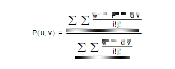

| |
The Mathematical Form Of B-Geometry |
| <<< System Attribute Definitions | Chapters | How the C# Binding is Implemented >>> |
The B-curves and B-surfaces in Parasolid may be either rational or non-rational, and of any degree. Although the degree is not limited, there is some optimisation for cubics and bi-cubics and so degree three is recommended. Internally to Parasolid, the B-spline form is used exclusively for modelling with B-surfaces. This section describes B-curves and B-surfaces in mathematical terms, with particular reference to their implementation in Parasolid. For a fuller description, you are advised to consult the list of references.
A spline is a piecewise polynomial or rational function which is defined to have continuity of position and of ( degree -1) derivatives at the joins between segments.
The B-spline is one of many ways of describing a spline function as a linear sum of basis functions. Its advantages are well described in the literature.
Parasolid’s data structure for B-curves supports both:
The B-spline basis functions are generated recursively. Users are advised to consult a standard text such as de Boor, 1978 or Gordon & Riesenfeld, 1974 for details of how they are computed.
The parameter t above is global. The user supplies an ordered set of values of t at specific points. The points are called knots and the set of values of t is called the knot vector. Each successive value in the set must be greater than or equal to its predecessor. Where two or more such values are the same we say that the knots are coincident, or that the knot has multiplicity greater than 1. In this case it is best to think of the knot set as containing a null or zero length span. The principal use of coincident knots is to allow the curve to have less continuity at that point than is formally required for a spline. A B-spline curve is infinitely differentiable, except possibly at knot positions. At a knot of multiplicity m the curve is at least continuous. The highest permitted multiplicity of a knot is equal to the degree of the curve, at which point the curve can have a discontinuity of first derivative and hence of tangent direction, except at the first or last knot where it can go as high as (degree+1).
In order to avoid problems associated, for example, with rounding errors in the knot set, Parasolid stores an array of distinct values and an array of integer multiplicities. This is reflected in the standard form used by the PK for input and output of B-curve data.
Most algorithms in the literature, and also the following discussion, refer to the expanded knot set in which a knot of multiplicity n appears explicitly n times.
The knot set determines a set of basis functions which are bell shaped, and non-zero over a span of (degree+1) intervals. One basis function starts at each knot, and each one finishes (degree+1) knots higher. The control vectors are the coefficients applied to these basis functions in a linear sum to obtain positions on the curve. Thus it can be seen that we require the number of knots n_knots = n_vertices + degree + 1
So if the knot set is numbered
,where nknots equals the number of knots, it can be seen then that it is only after
that sufficient
(degree+1) basis functions are present for the curve to be fully defined, and that the B-curve ceases to be fully defined after  The first
degree knots and the last
degree knots are known as the imaginary knots because their parameter values are outside the defined range of the B-curve.
The first
degree knots and the last
degree knots are known as the imaginary knots because their parameter values are outside the defined range of the B-curve.
When the end of a B-curve meets its start sufficiently smoothly Parasolid allows it to be defined to have periodic parameterisation. That is to say that if the valid range were from
to , where nknots equals the number of knots, then the difference between these values is called the period and the curve can continue to be evaluated with the same point reoccurring every period.
The minimal smoothness requirement for periodic curves in Parasolid is tangent continuity, but we strongly recommend C
(degree-1), or continuity in the
(degree-1)th derivative. This in turn is best achieved by repeating the first
degree vertices at the end, and by matching knot intervals so that counting from the start of the defined range,  , the first
degree intervals between knots match the last
degree intervals, and similarly matching the last
degree knot intervals before the end of the defined range to the first
degree intervals.
, the first
degree intervals between knots match the last
degree intervals, and similarly matching the last
degree knot intervals before the end of the defined range to the first
degree intervals.
A periodic B-curve must also be closed, but it is permitted to have a closed B-curve that is not periodic.
In this case the rules for continuity are relaxed so that only C0 (positional) continuity is required between the start and end. Such closed non-periodic curves are not able to be attached to topology.
It is a property of the B-spline basis functions that, for a given value of t, only (degree+1) B-spline basis functions are non-zero. Also, the B-spline basis functions sum to one and are non-negative. Thus each point P(t) on the curve is defined as a weighted average of (degree+1) B-spline vertices, and each segment is affected by only (degree+1) vertices.
A B-spline curve lies entirely within the convex hull of its B-spline vertices. In fact the B-spline curve obeys a stronger hull property: any point P(t) on the curves is inside the convex hull of (degree+1) adjacent vertices. As a result, the entire curve lies in the composite hull made up of the union of the convex hulls of each set of (degree+1) adjacent vertices. The following example illustrates this.
Figure B-1 B-spline curve in its composite hull
B-spline curves satisfy the variation diminishing property: No plane (or straight line, in the case of planar curves) intersects a B-spline curve more times than it intersects the control polyline. The control polyline is the connected series of lines that connect subsequent control points.
In the rational form of the curve, each vertex is associated with a weight, which increases or decreases the effect of the vertex without changing the curve hull. To ensure that the convex hull property is retained, the curve equation is divided by a denominator which makes the coefficients of the vertices sum to one.
Each weight may take any positive value, and the larger the value, the greater the effect of the associated vertex. However, it is the relative sizes of the weights which is important, as may be seen from the fact that in the equation given above, all the weights may be multiplied by a constant without changing the equation.
In Parasolid the weights are stored with the vertices by treating these as having an extra dimension. In the usual case of a curve in 3-d cartesian space this means that vertex_dim is four, the x, y, z values are multiplied through by the corresponding weight and the fourth value is the weight itself. Many algorithms operating on rational curves work in 4-space, projecting their results down onto the w=1 hyperplane.
The B-surface definition is best thought of as an extension of the B-curve definition into two parameters, usually called u and v. Two knot sets are required and the number of control vertices is the product of the number that would be required for a curve using each knot vector. The rules for periodicity and closure given above for curves are extended to surfaces in an obvious way.
For attachment to topology a B-surface is required to have G1 continuity. That is to say that the surface normal direction must be continuous.
|
Note: Parasolid does not support modelling with surfaces that are self-intersecting or contain cusps. Although they can be created they cannot be attached to topology. |
B-curves can be represented in any of the following forms:
B-spline curves were discussed in Section B.2. This section describes the other forms. In each case, equations are given for the rational form; the simplification to non-rational form is similar to that described for Bezier curves in Sections B.3.4 and B.3.5.
|
Note: For the rational form, each coefficient is supplied to Parasolid as the (x, y, z) components of the coefficient, followed by a weight for the coefficient. |
The curve equation is given by a (rational) polynomial of order (degree+1).

The polynomial coefficients are supplied starting with the constant term and ending with the term of the highest degree.
This method can only be used for cubics. The equation of the curve is:
The coefficients are supplied in the following order for the rational form: P0,w0,P1,w1,D0,d0,D1,d1
The coefficients are supplied in the following order for the non-rational form: P0,P1,D0,D1
This method stores the derivatives evaluated at the start point of each segment, allowing the curve to be reconstructed as a Taylor series:
The point is stored first, followed by the 1st derivative and ending with the derivative of order degree.
The general form of Bezier curve segments used in Parasolid is rational, but it is helpful to describe the non-rational form in order to describe the rational form. The definition of a Bezier curve segment of order (degree+1) requires (degree+1) Bezier vertices. The equation of the non-rational Bezier curve segment is:
The Bezier coefficients are derived by expanding the product as a binomial expansion in 1-t and t. It follows that they sum to 1. By inspection, they are positive over the range
as a binomial expansion in 1-t and t. It follows that they sum to 1. By inspection, they are positive over the range  . As a result, the Bezier curve P(t) lies inside the convex hull of the Bezier vertices, for t in the domain [0, 1]. The definition of a convex hull is the set
. As a result, the Bezier curve P(t) lies inside the convex hull of the Bezier vertices, for t in the domain [0, 1]. The definition of a convex hull is the set

The Bezier vertices are supplied in the order .
Other properties of the Bezier curve segment that follow from the definition are:
Figure B-1 illustrates these properties.
The curve segment passes through the first and last Bezier vertices, and in general approaches each intermediate one in turn, but does not pass through it. Thus the string of Bezier vertices (the Bezier hull) can be used to control the shape of the curve segment.
Each weight may take any positive value, and the larger the value, the greater the effect of the associated vertex. However, it is the relative sizes of the weights which is important, as you can see in the equation above, since the weights may be multiplied by any constant without changing the equation.
The Bezier vertices are supplied in the order .
The general properties of the rational curve are similar to the non-rational form. As before, the curve segment moves from the start vertex to the end vertex. However the end derivatives are affected by the weights:
The definition of a B-spline surface is an extension of the definition of a B-spline curve into two parameters. Two knot vectors are required, one for each parameter. For B-spline curves the knot vectors control how a curve is segmented, and for B-spline surfaces the knot vectors control how a surface is divided into patches. For any row of patches:
The description of B-spline curves and knots applies to surfaces as well.
|
Note: Both knot vectors must have coincident end knots for the surface to interpolate any of the B-spline vertices, and in this case the corner B-spline vertices will be the surface corners. |
A B-spline surface is said to be G1-continuous if it has a continuous unit normal vector.
The equation of a non-uniform rational B-spline surface of orders (udegree+1), (vdegree+1) is:

You achieve continuity of position between adjacent patches with Bezier end conditions by using the same Bezier vertices and weights to define the common boundary on each patch.
Continuity of slope across the boundary is more difficult to achieve, and required two conditions.
First, you need to make corresponding triplets of vertices across the boundary co-linear, as shown in Figure B-2.
Figure B-2 Triplets of vertices (co-linear) across patch boundary
Second, you should ensure that the relative spacing between the vertices in the triplets is constant along the boundary, and the weights are in a constant ratio, as shown in Figure B-3. Although this may not always be required, it is the simplest way of ensuring continuity of slope across adjacent patches.
Figure B-3 Constant spacing between vertices in the triplet
For the best results, you should try to ensure that data is as exact as possible.
Parametric surfaces can be represented in any of the following forms:
B-spline surfaces were described in Section B.4. This section describes the other forms. As in Section B.3, “Other methods of representing curves”, equations are given for the rational form; each coefficient should be supplied as the (x, y, z) components of the coefficient followed by a weight for the coefficient.
The surface equation is given by a (rational) bipolynomial (udegree+1), (vdegree+1):
The polynomial coefficients are supplied in the order shown below
starting with the constant term and ending with the term of highest degree.
For the non-rational form, the w’s are omitted.
This method can only be used for bi-cubics. The hermite equation for the patch in matrix form is:
The suffix T denotes the transpose of a matrix: for example is the transpose of M.
In the matrices A and W, the coefficients are the points at the corners and their derivatives. The w values are the corresponding weights and their derivatives.
The coefficients are supplied in the order shown below:
For the non-rational form, the w’s are omitted.
This method stores the derivatives evaluated at the u=0, v=0 corner of each patch, allowing the surface to be reconstructed as a Taylor series:
The point is supplied first, followed by the u derivatives in order, and ending with the derivative of order udegree in u, vdegree in v.
The definition of a single patch of a Bezier surface of order (udegree+1) in parameter u, (vdegree+1) in parameter v, requires a grid of (udegree+1)*(vdegree+1) vertices, with a weight associated with each vertex. The equation of the patch is:
For the rational form the Bezier vertices and weights are supplied as follows:
For the non-rational form, the w’s are omitted.
which is the equation for the Bezier curve segment on the weights and vertices with suffix i=0. Similar results hold for the other boundaries. Thus the surface patch is bounded by the Bezier curve segments (or indeed the interior ones), except for the corner ones.
The patch obeys a convex hull property: it is inside the convex hull of its Bezier vertices.
| <<< System Attribute Definitions | Chapters | How the C# Binding is Implemented >>> |


 are the B-spline coefficients
are the B-spline coefficients
 are the weights
are the weights